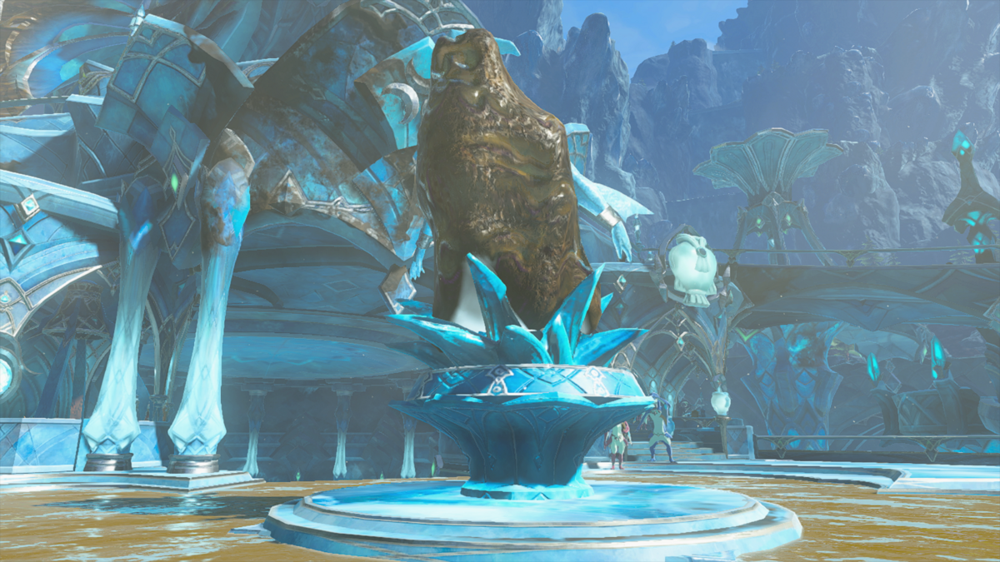

图：游戏实机截图——林克与希多结下水之贤者的誓言（图片来源：Zelda Wiki，本站自托管图片）。
先说结论：这座神殿难在哪
水之神殿飘在卓拉领地上空，是海拉鲁所有水的源头。神殿中央有五只大水缸，只有中间一只在放水，任务就是把另外四座水阀打开，再回终端放水，把喷污泥的源头冲干净。难点不在解谜本身，而在两件事：第一，全程要靠希多的水之力打水车、靠水之果洗污泥，水系物资不够会寸步难行；第二，神殿里是低重力，跳得高、落得慢，习惯了地面节奏的人容易踩空。Boss 是污泥魔像，一只会变成污泥鲨鱼的小章鱼，打法就一句：用水洗掉鲨鱼外壳，露出本体再追上去打。打完拿心之容器和水之贤者誓言。
前置与准备：先拿卓拉铠甲
进神殿之前，先把主线“希多与卓拉领地”做到希多加入队伍，并且先拿到卓拉铠甲。没有这件衣服，神殿门口的瀑布都游不上去。
- 卓拉铠甲：在卓拉领地找尤娜接“修复卓拉铠甲”任务，她要一条古代箭鱼的鳞片。铁匠丹托会提示你去普洛穆斯山顶的米法庭院，米法雕像附近的水域里就有古代箭鱼；大天空岛的瀑布边也能钓到。把鱼交给尤娜，她就把修好的卓拉铠甲给你。穿上它，碰到瀑布就能直接游上去。
- 水之果、丘丘胶囊：多带。污泥要用沾水的箭或者希多的水之力才能洗掉，水之果是最便宜的水源。丘丘胶囊（水属性）也一样能用。
- 箭要带足：洗污泥、射开关、打 Boss，全程都在用弓。基斯之眼也可以带几个，追踪箭打逃跑的 Boss 很好用。
- 浮石：神殿里有几处要用到左纳乌浮石，现场就有，不用自带，但要知道它能把抬起来的东西定在空中。
怎么上天：古代卓拉水道与源头之岛
从卓拉领地出发，先去广场上那座被污泥覆盖的雕像：用水之果箭洗掉雕像上的污泥，露出下面的希多，和他汇合。接着下到古代卓拉水道（卓拉领地地下的古代水道），一路解开水道机关，搭起通往天空的水桥。顺着水桥一路向上，经过浮鳞岛，到达源头之岛。
源头之岛上有座伊戈修神庙（坐标约 3481, 0664, 1325），先开了当传送点，顺便练手：神庙里用的气泡机关，水之神殿里还会再遇到，提前熟悉不亏。从源头之岛游上最后一道瀑布，就到了水之神殿，终端坐标约 3357, 0767, 1742。

图：游戏实机截图——卓拉领地广场上被污泥覆盖的雕像，洗掉它才能见到希多（图片来源：Zelda Wiki，本站自托管图片）。
中央水缸：先看懂机关
一进神殿，面前就是五只焊在一起的大水缸，每只上面一个水阀，只有中间一只在放水。先触碰中央的终端看目标：要把四座水阀全部打开，再回终端放水。五只水缸的水会一起冲向喷污泥的源头。触碰终端还会建一个传送点，并把四座水阀的位置标在地图上。四座水阀没有固定顺序，卡住就换一座。
四座水阀逐个解法
| 水阀 | 位置 | 关键操作 |
|---|---|---|
| 第一座 | 地下一层 | 浮石压开关灭火，金属球推进洞里，希多水波打水车 |
| 第二座 | 东北侧高处 | 上右上方岛屿，石板补水车叶片，气泡导电开闸 |
| 第三座 | 东侧转塔 | 游瀑布上塔，水箭洗开关再射中 |
| 第四座 | 西侧高处 | 气泡送金属球上去，浮石顶住水闸排水 |
第一座：地下一层，压开关灭火再球入洞
从中央平台往下走，到地下一层。入口被火焰喷口挡住：旁边有个地板开关，用究极手抓一块浮石压在上面，火焰就停了。进去之后把金属球用究极手推进远处墙上的洞里——中间是尖刺地面，把球粘在浮石上带过去最稳。球进洞后，让希多对水车放一道水波，第一座水阀就开了。
第二座：东北侧高处，补水车叶片再导电开闸
东北侧高处还有一座水车，叶片缺了一块，转不起来。先乘水气泡、配合倒转乾坤升到右上方的岛上：用究极手把旁边一块石板粘到水车叶片上，把缺口补齐；再推一个水气泡到两处电触点之间，让气泡导电接通电路，闸门打开；最后让希多对水车放一道水波，第二座水阀就开了。
第三座：东侧转塔，游瀑布上去射开关
东侧有个不停旋转的高塔，塔身上糊着污泥。塔下的瀑布也被污泥堵住了：先用水之果箭把瀑布口的污泥洗掉，穿上卓拉铠甲游瀑布上去。路上会遇到一只火莱克挡路，清掉它之后用通天术上到塔顶附近。再朝塔身的开口射一支沾了水的箭，把开关上的污泥洗掉，补一箭射中露出来的开关，旁边的门就开了；进去让希多对水车放一道水波，第三座水阀就开了。
第四座：西侧高处，气泡送球加浮石顶水闸
西侧要过一道浮空碎石路，走到头有个气泡发生器被污泥盖住了。先洗掉上面的污泥，让它开始冒气泡。再去旁边水池里用究极手抓起金属球，放进一个气泡里，球会自己浮上去；你也跳进一个气泡，跟上去。到了上层平台，抬起石墙水闸能排水，但一松手就掉回去：拿一块浮石，启动后粘在水闸顶部，墙就定在空中了。水排掉之后，把金属球推进洞里，第四座水车露出来，希多水波打上去。四座水阀全开，回中央触碰终端放水。
Boss：污泥魔像
四座水阀全开、中央放水之后，喷污泥的源头里跳出一只小章鱼——这就是污泥魔像，卓拉领地所有污泥的罪魁祸首。它会把自己包进污泥里，变成一条污泥鲨鱼围着你游。
1用水洗掉鲨鱼外壳：让希多放水之力打它，或者用水之果箭、丘丘胶囊射它。洗一两次，鲨鱼外壳就掉了，露出里面的小本体。
2追上去打晕它：本体一露出来就会逃跑，射一箭把它打晕，冲上去近战猛攻。这是整场伤害最高的时间，别省武器。
3半血后进第二阶段：血量过半，它开始到处喷污泥水洼，场地变滑，本体在水洼之间跳来跳去，很难追。先用水之果和希多的水之力把地上的污泥清一清，场地干净了它就没地方跳。
4追踪箭收尾：它跳水洼的时候，用基斯之眼做的追踪箭射它，命中就晕，再冲上去输出。神殿里是低重力，跳起来开弓有慢动作，瞄准比地面上容易。
这场 Boss 战的要点是“先清场再输出”：地上的污泥不清理，你追不上它，它还越喷越多。希多的水之力有冷却，别乱放，留给洗鲨鱼外壳和清场地。佐纳乌消防栓融在盾上或者武器上，也能快速冲掉一片污泥，是个省水之果的办法。
奖励与后续：水之贤者誓言
打完污泥魔像，拿一颗心之容器，再和希多对话，得到水之贤者誓言。希多回卓拉领地继承王位，之后可以随时召唤他。他的水之力能在你周围张开一个水泡，挡一次伤害，还能灭火、洗污泥，平时赶路遇到火和污泥都用得上。四座神殿没有固定顺序，水之神殿打完之后，去风、火、雷任意一座都可以，贤者能力是叠加的，集得越多越顺。
哈里的取舍：三件容易翻车的事
第一，伊戈修神庙先开。神庙里的气泡机关就是水之神殿第四座水阀的预习，提前练熟了，进神殿直接上手。神庙传送点还能当神殿门口的落脚点，死了不用从卓拉领地重爬。
第二，水之果宁多勿少。水阀要洗污泥、Boss 要洗外壳、场地要洗水洼，全程都在烧水之果。进神殿之前去卓拉领地周边多摘点，别指望神殿里现找。
第三，别在污泥里追 Boss。很多人看本体露出来就闷头追，结果踩进污泥动不了，白白挨打。先清脚下的污泥，再追；追不上就用弓箭，追踪箭就是为这场准备的。
一句话总结
先拿卓拉铠甲，爬古代卓拉水道上源头之岛，伊戈修神庙先开，四座水阀逐个点亮——球入洞、补水车、射开关、气泡送球——回中央放水，用水洗掉污泥鲨鱼，追上去打晕本体，拿心之容器和希多的誓言走人。